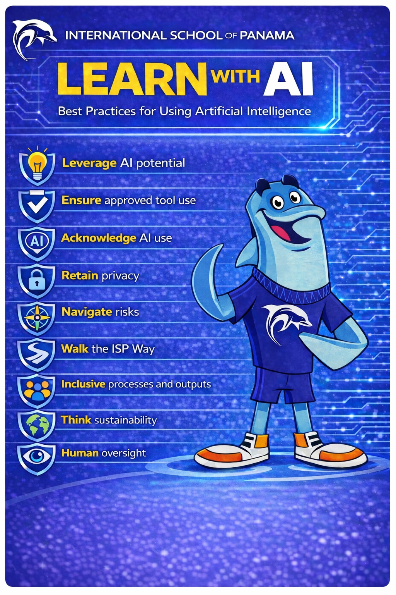

Select a section to explore the strategy.
AI Incident Categories
Explore risks and examples by core value and role (students, teachers, leaders, staff).
Prevention, SOP & Consequences
Review prevention controls, incident response steps, severity levels, and restoration pathways.
EU AI Act Summary
Review alignment, prohibited use, deployer obligations, and high-risk system expectations for K-12 schools.
AI and Data Protection / GDPR
Access practical privacy, data governance, and GDPR-aligned implementation guidance for AI use.
Digital Citizenship Curriculum Map
Browse the integrated AI + digital citizenship map with lesson links and grade bands.
RAIL Infographics
View and share the Core Values and Practices, SAFE AI, and LEARN WITH AI visuals.
RAIL Action Plan
Review implementation topics, actions, questions, and progress status in one dedicated view.
LEARN WITH AI
